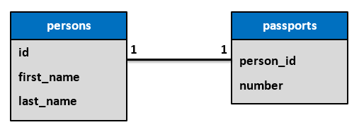
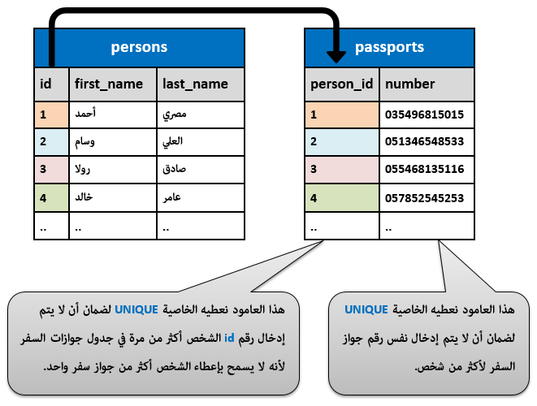
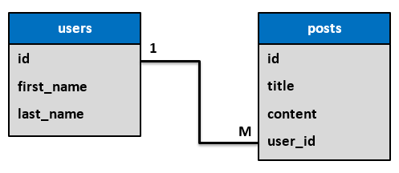
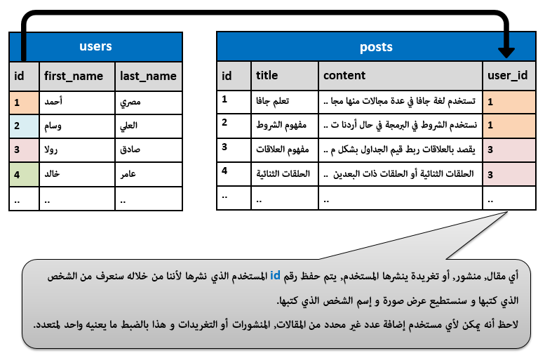
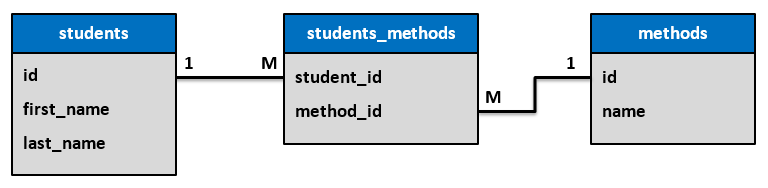
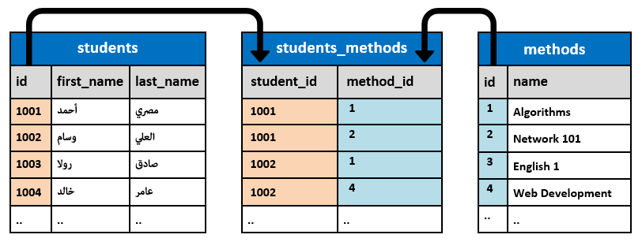

SQLأنواع العلاقات بين الجدوال
مفهوم العلاقات في قواعد البيانات
في البداية, قبل بناء أي قاعدة بيانات يجب ان يكون لديك معرفة دقيقة بالمعلومات التي ينوي صاحب المشروع أن يتم تخزينها.
على أساس المعلومات التي ينوي صاحب العمل تخزينها في المشروع, تقوم ببناء قاعدة البيانات حتى تخزنها بما يلائم المشروع.
الآن, بعد معرفة كل المعلومات التي ينوي صاحب المشروع تخزينها, سيكون عليك إنشاء عدة جداول في قاعدة البيانات بهدف تخزين المعلومات التي يتم إدخالها بشكل صحيح خالي من أي تكرار.
عندما يحاول المبرمج المبتدئ إنشاء الجداول في قاعدة البيانات, فإنه في العادة يضيع في نقطة واحدة و هي كيفية توزيع بيانات المشروع على عدة جداول بشكل صحيح حتى يستطيع ربطها مع بعضها من جديد عندما يريد إسترجاعها و هذا ما ستتعلمه بالضبط من هذا الدرس.
بشكل عام, بمجرد أن تفهم نوع العلاقة المنطقية بين معلومات المشروع, تأكد أنك قادر على بناء أي قاعدة بيانات تريد حتى و إن كانت تتألف من ألف جدول.
أنواع العلاقات بين الجداول
عند التفكير بنوع العلاقة بين جدول و آخر, فإنه سيكون أحد الإحتمالات التالية:
واحد لواحد ( One to One ).
واحد لمتعدد ( One to Many ).
متعدد لمتعدد ( Many to Many ).
إعداد رسومات لتوضيح نوع العلاقة بين الجداول
عند إعداد رسم لإيضاح نوع العلاقة بين الجداول, قد تجد إختلاف في طرق الرسم على حسب البرنامج الذي تستخدمه و لكن الفكرة ستكون نفسها تماماً.
بالإضافة إلى ذلك, قد تجد الرسم يضع أسماء الجداول فقط أثناء رسم العلاقات فيما بينها.
و قد تجد البرنامج أكثر دقة حيث يريك كيف أن الأعمدة بداخل الجداول مرتبطة مع بعضها البعض.
علاقة واحد لواحد ( One to One )
هذه العلاقة تعني أن كل قيمة في الجدول, لا يمكن أن يستخدهها الجدول الآخر أكثر من مرة واحدة.
كمثال بسيط, أثناء تسجيل المواطنين في سجلات الدولة الرسمية, تقوم السلطات المختصة بإعطاء كل مواطن رقم فريد يميزه عن بقية المواطنين حتى تتجنب الوقوع بخطأ تشابه الأسماء عند إجراء أي معاملة قانونية متعلقة به. هذا الرقم يسمى الرقم الوطني للشخص.
الرقم الوطني قد يستخدم في أمكان عديدة و لكن في بعض الحالات قد يكون إستخدامه ممكناً مرة واحدة و إليك بعض الأمثلة.
المثال الأول
كل مواطن يعمل في وظيفة ما يتم إعطاؤه رقم ضريبي خاص به في الدولة, هذا الرقم يتم وضعه في الأساس بناءاً على الرقم الوطني للمواطن.
من المنطقي جداً في هذه الحالة أن يكون كل شخص يملك رقم ضريبي واحد لأن هذا الرقم ستستخدمه الدولة لتحدد الضرائب المترتبة على كل مواطن من خلاله.
المثال الثاني
يمكن للمواطن يمكنه الحصول على رخصة قيادة واحدة من نفس النوع, فمثلاً لا يمكن للمواطن إمتلاك رخصتين لقيادة السيارات في وقت واحد.
رقم رخصة القيادة التي تعطى للمواطن يتم وضعه في الأساس بناءاً على الرقم الوطني للمواطن لأنه الشيء الوحيد الذي يضمن تمييزه عن باقي المواطنين.
المثال الثالث
إذا قدمت طلب للحصول على جواز سفر, سيتم تسجيل أن المواطن رقم كذا أصبح يملك جواز السفر رقم كذا. و في حال فقدت جواز سفرك أو أردت الحصول على جواز سفر جديد, تجدهم يقوموا بإتلاف جواز سفرك القديم و يعطوك جواز سفر جديد بدلاً منه. أي تجدهم يسمحوا لك باقتناء جواز سفر واحد باسمك.
إذاً, في حالة جواز السفر فإنه يسمح بأن يتم تسجيل جواز سفر واحد لكل شخص أيضاً.
رقم جواز السفر الذي يعطى للمواطن يتم وضعه في الأساس بناءاً على الرقم الوطني للمواطن لأنه الشيء الوحيد الذي يضمن تمييزه عن باقي المواطنين.
طريقة رسم العلاقة واحد لواحد
شكل الرموز المستخدمة في تحديد شكل علاقة واحد لواحد بين جدول و آخر يختلف من برنامج لآخر و لكن الفكرة هي نفسها.
قد تجد خط بين الجدولين عليه 1 : 1 كالتالي.
قد تجد خط بين الجدولين في كل طرف منه يوجد 1 كالتالي.
قد تجد خط بين الجدولين في كل طرف منه يوجد خط واحد عامودي كالتالي.

في حال كانت العلاقة محددة بدقة بين الجداول, سيتم وصل الخط الذي يربط الأعمدة المشتركة بين الجداول مباشرةً عليها, و هنا يمكننا وضع أي رمز من الرموز السابقة للإشارة إلى أن العلاقة بينهما هي واحد لواحد كالتالي.

طريقة حفظ البيانات في علاقة واحد لواحد
الصورة التالية توضح كيف تكون البيانات مخزنة في الجداول في حال كان نوع العلاقة واحد لواحد.
لاحظ أنه في الجدول passports لا يمكن وجود رقم id أي شخص أكثر من مرة لأنه بالمنطق لا يمكن السماح للشخص بالحصول على أكثر من جواز سفر.

علاقة واحد لمتعدد ( One to Many )
هذه العلاقة تعني أنه كل قيمة في الجدول, يمكن أن يستخدهها الجدول الآخر بالقدر الذي يريده.
هذه العلاقة هي أكثر نوع من العلاقات التي نتعامل معها و إليك بعض الأمثلة:
في موقع فيسبوك, يستطيع المستخدم أن ينشر عدد غير محدد من البوستات و التعليقات.
في موقع تويتر, يستطيع المستخدم أن ينشر عدد غير محدد من التغريدات و التعليقات.
في موقع يوتيوب, يستطيع صاحب القناة أن ينشر عدد غير محدد من الفيديوهات, و يستطيع أن يعلق عليها هو و متابعيه قدر ما شاء إلخ..
طريقة رسم العلاقة واحد لمتعدد
شكل الرموز المستخدمة في تحديد شكل علاقة واحد لمتعدد بين جدول و آخر يختلف من برنامج لآخر و لكن الفكرة هي نفسها.
قد تجد خط بين الجدولين عليه 1 : M كالتالي.
قد تجد خط بين الجدولين في طرف منه يوجد 1 و في طرف آخر يوجد M كالتالي.
قد تجد خط بين الجدولين في طرف منه يوجد 1 و في طرف آخر يوجد % كالتالي.
قد تجد خط بين الجدولين في طرف منه يوجد خط واحد عامودي و في طرف آخر يوجد ثلاث خطوط مرتبطة كالتالي.
في حال كانت العلاقة محددة بدقة بين الجداول, سيتم وصل الخط الذي يربط الأعمدة المشتركة بين الجداول مباشرةً عليها, و هنا يمكننا وضع أي رمز من الرموز السابقة للإشارة إلى أن العلاقة بينهما هي واحد لمتعدد كالتالي.

طريقة حفظ البيانات في علاقة واحد لمتعدد
الصورة التالية توضح كيف تكون البيانات مخزنة في الجداول في حال كان نوع العلاقة واحد لمتعدد.
لاحظ أنه في الجدول posts يمكن وجود رقم user_id أي شخص أكثر من مرة لأنه بالمنطق يمكن للشخص كتابة أكثر من منشور أو مقال.

علاقة متعدد لمتعدد ( Many to Many )
هذه العلاقة تعني أن كل قيمة في الجدول, يمكن أن يستخدهها الجدول الآخر بالقدر الذي يريده و العكس صحيح.
هذا النوع من العلاقات قد يمر معك في بعض الأحيان و هو النوع الوحيد من العلاقات الذي يحتاج طريقة خاصة للتعامل معه.
كمثال بسيط, في حال كنت تبني قاعدة بيانات لجامعة, و تريد تخزين معلومات الطلاب و المواد المسجل بها كل طالب.
هنا الطالب يمكنه أن يتسجل في عدة مواد في نفس الوقت, و المادة الواحدة يمكن أن يتسجل بها عدة طلاب في نفس الوقت أيضاً.
إذاً طبيعة العلاقة بين جدول الطلاب و جدول المواد هي علاقة متعددة.
طريقة رسم العلاقة متعدد لمتعدد
شكل الرموز المستخدمة في تحديد شكل علاقة متعدد لمتعدد بين جدول و آخر يختلف من برنامج لآخر و لكن الفكرة هي نفسها.
قد تجد خط بين الجدولين عليه M : M كالتالي.
قد تجد خط بين الجدولين في كل طرف منه يوجد M كالتالي.
قد تجد خط بين الجدولين في كل طرف منه يوجد % كالتالي.
قد تجد خط بين الجدولين في كل طرف منه يوجد ثلاث خطوط مرتبطة كالتالي.
طريقة إنشاء علاقة متعدد لمتعدد
في مثالنا السابق حول الطلاب و المواد, لا بد لنا أن نضع معلومات الطلاب في جدول و معلومات المواد في جدول آخر.
بعدها يجب أن نفكر بطريقة لربط هذين الجدولين مع بعضهما حتى نستطيع معرفة مواد كل طالب أو من هم طلاب كل مادة.
قاعدة عامة: لربط أي جدولين بشكل تكون العلاقة بينهما متعدد لمتعدد, يجب أن تنشئ جدول ثالث حتى يكون وسيط بينهما.
إذاً في العلاقة التي نوعها متعدد لمتعدد, لا يمكنك ربط معلومات الجدولين مع بعضهما إلا بإضافة جدول ثالث يكون بمثابة وسيط بينهما.
الآن, بما أن كل طالب في جدول الطلاب يملك رقم id خاص به و كل مادة في جدول المواد تملك رقم id خاص بها أيضاً, سنعتمد على هذه الأرقام في الجدول الوسيط من أجل تحديد كل طالب في أي مادة مسجل لأنها الشيء الوحيد الذي نستطيع من خلاله تمييز الطلاب عن بعضهم و تمييز المواد عن بعضها.
عند إضافة جدول وسيط بين الجدولين سيصبح شكل الرسم كالتالي.
لاحظ أننا قمنا بتحويل العلاقة M : M بين الجدولين students و methods إلى علاقتين نوعهما 1 : M عند ربطهما بالجدول الوسيط الذي قمنا بتسميته students_methods و ستفهم السبب بعد قليل.
في حال كانت العلاقة محددة بدقة بين الجداول, سيتم وصل الخط الذي يربط الأعمدة المشتركة بين الجداول مباشرةً عليها, و هنا يمكننا وضع أي رمز من الرموز السابقة للإشارة إلى أن العلاقة بينهما هي واحد لمتعدد كالتالي.

طريقة حفظ البيانات في علاقة متعدد لمتعدد
الصورة التالية توضح كيف تكون البيانات مخزنة في الجداول في حال كان نوع العلاقة متعدد لمتعدد.
لاحظ كيف أصبحنا قادرين على جعل الطالب قادر أن يتسجل في عدة مواد في نفس الوقت, و المادة الواحدة يمكن أن يتسجل بها عدة طلاب في نفس الوقت أيضاً.

إذا كنا سنقرأ المعلومات المخزنة في الجدول students_methods, يمكننا قرائتها إما بالنسبة لكل طالب و إما بالنسبة لكل مادة.
و لنقرأ المعلومات بشكل مفهوم, نقوم بتبديل id الطالب بإسم الطالب. و نقوم بتبديل id المادة بإسم المادة كما سنفعل الآن.
قراءة الجدول بالنسبة لكل طالب
قراءة الجدول بالنسبة لكل مادة
المادة Algorithms مسجل فيها الطالب أحمد المصري و الطالب وسام العلي.
المادة Network 1 مسجل فيها الطالب أحمد المصري.
المادة Web Development مسجل فيها الطالب وسام العلي.

 محرر الويب
محرر الويب نظام الألوان
نظام الألوان محول الوحدات
محول الوحدات محلل عناوين الشبكات
محلل عناوين الشبكات